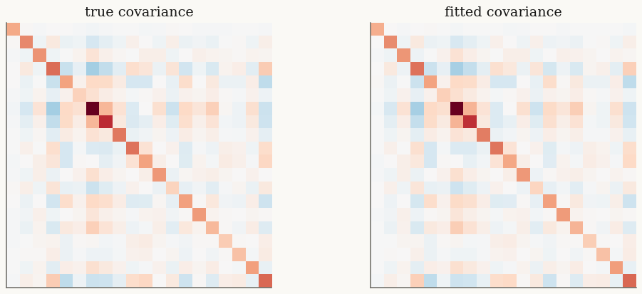

Factor mixtures for high dimensions#
A full covariance matrix has \(d(d+1)/2\) free entries — for \(d = 30\) stocks that is 465 parameters, far too many to estimate from a few thousand daily returns. The factor variants replace \(\Sigma\) with a low-rank-plus-diagonal structure
so the covariance costs only \(d\,r + d\) parameters. The Cholesky-free linear
algebra uses the Woodbury identity, keeping every solve \(O(d r^2)\) instead of
\(O(d^3)\). FactorVarianceGamma, FactorNormalInverseGamma,
FactorNormalInverseGaussian, and FactorGeneralizedHyperbolic all share this
structure.
import jax
jax.config.update("jax_enable_x64", True)
import jax.numpy as jnp
import numpy as np
from normix import FactorNormalInverseGaussian
from normix.utils.plotting import set_theme
set_theme()
np.set_printoptions(precision=3, suppress=True)
Constructing a factor model#
from_classical takes the loadings \(F\) (shape \((d, r)\)) and the positive
diagonal \(D\) (shape \((d,)\)) in place of a dense \(\Sigma\):
rng = np.random.default_rng(0)
d, r = 20, 2
F_true = jnp.asarray(rng.normal(size=(d, r)) * 0.4)
D_true = jnp.asarray(np.abs(rng.normal(size=d)) * 0.3 + 0.2)
mu_true = jnp.zeros(d)
gamma_true = jnp.asarray(rng.normal(size=d) * 0.1)
model = FactorNormalInverseGaussian.from_classical(
mu=mu_true, gamma=gamma_true, F=F_true, D=D_true, mu_ig=1.0, lam=1.5)
print("d =", model.d, " r =", model.r)
d = 20 r = 2
The stored scale matrix is exactly the low-rank-plus-diagonal \(\Sigma = F F^\top + \operatorname{diag}(D)\): a rank-\(r\) piece plus a full-rank diagonal. (The marginal covariance of \(X\) adds the variance-mean contribution from \(\gamma\) on top of this scale.)
Sigma_scale = model.F @ model.F.T + jnp.diag(model.D)
print("F shape:", model.F.shape, " D shape:", model.D.shape)
print("rank of FFᵀ :", int(jnp.linalg.matrix_rank(model.F @ model.F.T)))
print("Σ = FFᵀ + diag(D) full rank:", int(jnp.linalg.matrix_rank(Sigma_scale)) == d)
print("marginal cov full rank :", int(jnp.linalg.matrix_rank(model.cov())) == d)
F shape: (20, 2) D shape: (20,)
rank of FFᵀ : 2
Σ = FFᵀ + diag(D) full rank: True
marginal cov full rank : True
The parameter budget#
The win is in the covariance parametrization. For \(d = 20\):
full_cov_params = d * (d + 1) // 2
factor_cov_params = d * r + d
print(f"full Σ : {full_cov_params} covariance parameters")
print(f"factor (r={r}): {factor_cov_params} covariance parameters")
print(f"reduction : {full_cov_params / factor_cov_params:.1f}×")
full Σ : 210 covariance parameters
factor (r=2): 60 covariance parameters
reduction : 3.5×
Sampling and fitting#
rvs returns the usual (n, d) array. We sample from the true model and refit
with default_init(X, r=r) followed by EM:
X = model.rvs(5000, seed=1)
print("data shape:", X.shape)
init = FactorNormalInverseGaussian.default_init(X, r=r)
result = init.fit(X, max_iter=80, tol=1e-3, verbose=0)
fit = result.model
print("converged :", result.converged)
print("iterations:", result.n_iter)
print("elapsed : %.2fs" % result.elapsed_time)
data shape: (5000, 20)
converged : True
iterations: 28
elapsed : 15.53s
The fit is best judged by held-out log-likelihood and by how well it recovers the covariance, not by matching \(F\) entrywise (the factorization is only identified up to rotation):
cov_err = float(jnp.linalg.norm(fit.cov() - model.cov()) / jnp.linalg.norm(model.cov()))
print(f"relative covariance error: {cov_err:.3f}")
print(f"train mean log-likelihood: {float(fit.marginal_log_likelihood(X)):.4f}")
relative covariance error: 0.037
train mean log-likelihood: -20.3146
import matplotlib.pyplot as plt
fig, (a0, a1) = plt.subplots(1, 2, figsize=(11, 4.4))
vmax = float(jnp.abs(model.cov()).max())
a0.imshow(np.asarray(model.cov()), vmin=-vmax, vmax=vmax, cmap="RdBu_r")
a0.set_title("true covariance")
a1.imshow(np.asarray(fit.cov()), vmin=-vmax, vmax=vmax, cmap="RdBu_r")
a1.set_title("fitted covariance")
for a in (a0, a1):
a.set_xticks([]); a.set_yticks([])
plt.show()

When factor wins over full \(\Sigma\)#
High \(d\), modest \(n\). With hundreds of assets and a few thousand observations, a full \(\Sigma\) overfits; the factor model regularizes by construction.
Speed. Woodbury solves are \(O(d r^2)\); the EM E-step never forms or factorizes a dense \(d \times d\) matrix.
Interpretability. The columns of \(F\) are latent factors — market and sector-like structure in returns.
Use the full-\(\Sigma\) mixtures of Normal variance-mean mixtures when \(d\) is small; switch to the factor variants when \(d\) grows.
Takeaways#
Factor mixtures parametrize \(\Sigma = F F^\top + \operatorname{diag}(D)\), cutting covariance parameters from \(O(d^2)\) to \(O(d r)\).
from_classical(mu, gamma, F, D, ...)anddefault_init(X, r=...)build them;fitruns EM with Woodbury linear algebra throughout.Prefer them whenever \(d\) is large relative to the sample size.
This completes the distribution tour. The Batch EM in practice tutorial next
opens up the EM algorithm that powers fit.